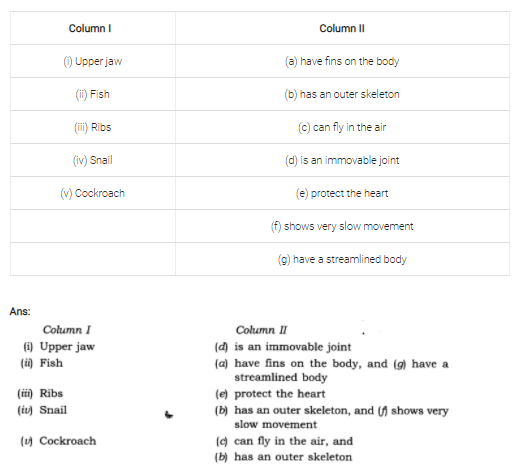

all ex and ques/ans is avlable in wedsite of ncert
1. Fill in the blanks:
(a) Joints of the bones help in the_____________ of the body.
(b) A combination of bones and cartilages forms the_______________ of the body.
(c) The bones at the elbow are joined by a______________
(d) The contraction of the____________ pulls the bones during
Ans:
(a) movement
(b) skeleton
(c) hinge
(d) muscle
2. Indicate ‘true’ and false’ among the following sentences:
(a) The movement and locomotion of all animals is exactly the same.
(b) The cartilages are harder than bones.
(c) The finger bones do not have joints.
(d) The fore arm has two bones.
(e) Cockroaches have an outer skeleton.
Ans:
(a) False
(b) False
(c) False
(d) True
(e) True
3. Match the items in column I with one or more items of column II:

4. Answer the following questions:
(a) What is a ball and socket joint?
(b) Which of the skull bones are movable?
(c) Why can our elbow not move backwards?
Ans:
(a) The rounded end of one bone fits into the hollow space of other bone. This is called ball and socket joint. Ball and socket joints allow movements in all the directions, e.g. shoulder and hip can be moved in all directions.
(b) In skull, only lower jaw is movable.
(c) Our elbow cannot move backwards because the elbow has a hinge joint that allows movement in only one direction.